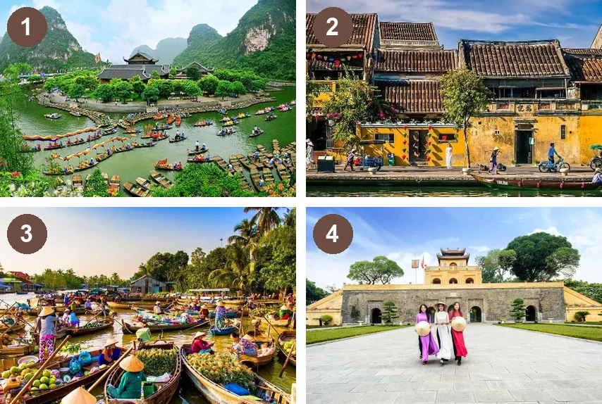
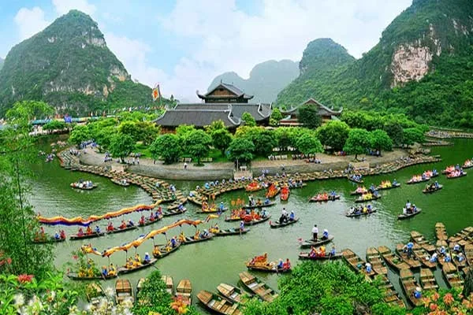
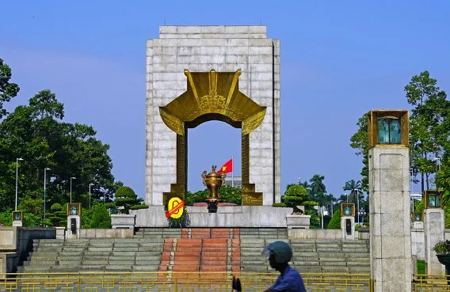

Heritage sites in Viet Nam
Lesson 1 — Getting started
6Explore · discover · protect
- 🗺️
name and describe heritage sites in Viet Nam
- 🎧
understand a conversation about a field trip
- 🔗
use phrases like cultural heritage
- 🎤
introduce one heritage place
Warm-up
Name the places
5 minutesWhere is it?

1. Trang An
2. Hoi An Ancient Town
3. Mekong River Delta
4. Thang Long Imperial Citadel
New words
Look · listen · repeat
7 minutes


Practice
Ms Hoa, Peter and Anna · Tasks 1–4
20 minutesWhat can you do there?
- 🛶
Trang An
a boat trip · mountains and rivers · ancient temples
- 🏮
Hoi An
old houses · urban lifestyles · ancient architecture
- 🍉
Mekong Delta
floating markets · folk singing · fruit gardens
A field trip to a heritage site
Ms Hoa: Good morning, everyone. As part of our school cultural programme, we need to plan a field trip to a heritage site in Viet Nam. So, where would you like to go?
Peter: Do you have any suggestions for us, Ms Hoa?
Ms Hoa: I’d recommend Trang An Scenic Landscape Complex. It’s the only place in Southeast Asia to be recognised as a mixed heritage site by UNESCO.
A field trip to a heritage site
Peter: What’s a mixed heritage site?
Ms Hoa: It’s a site that has both natural and cultural importance. For example, you can go on a boat trip there to enjoy the beautiful landscape. Or you can visit the old temples and monuments to learn about Vietnamese history.
Anna: That sounds interesting, but if we want to learn about cultural values of the past, where should we go?
A field trip to a heritage site
Ms Hoa: You can go to Hoi An Ancient Town in central Viet Nam. You’ll learn about urban lifestyles and traditions from the 15th to the 19th century and see examples of ancient architecture. All buildings are kept in their original state. It’s a great place to explore.
Anna: Wow! That’s exciting. What about southern Viet Nam?
A field trip to a heritage site
Ms Hoa: You can go to the Mekong River Delta to enjoy don ca tai tu – a form of traditional folk singing. Local artists perform don ca tai tu everywhere – at parties, in fruit gardens, even on the floating market boats.
Peter: It’s a great way to promote this kind of cultural heritage of southern Viet Nam.
Ms Hoa: Indeed. Now, please discuss in your group and let me know your field trip ideas.
Find the evidence
1. Going on a tour by boat T
2. Seeing areas of natural beauty T
3. Seeing ancient houses kept in their original style of architecture H
4. Listening to don ca tai tu at floating markets M
Heritage phrases
1. folk c · folk singing
2. cultural d · cultural heritage
3. beautiful b · beautiful landscape
4. ancient a · ancient architecture
a. architecture
b. landscape
c. singing
d. heritage
Look for to + verb
1. Trang An is the only place in Southeast Asia ______. to be recognised as a mixed heritage site by UNESCO
2. You can go on a boat trip ______. to enjoy the beautiful landscape
3. You can visit the old temples and monuments ______. to learn about Vietnamese history
4. Performing folk songs at floating markets is a great way ______. to promote this kind of cultural heritage of southern Viet Nam
Answer correctly → add one building piece
- 🎁
Open a box
12 mystery questions from Tasks 2–3
- ✅
Answer
The teacher shows the answer.
- 🏗️
Build
First team to finish 6 pieces wins!
Production
Heritage travel fair
10 minutesWelcome to my homeland!
- 📍
Where is it?
Trang An · Hoi An · Mekong Delta
- ✨
What is special?
landscape · architecture · folk singing
- 🧭
What can visitors do?
boat trips · old houses · floating markets
Use at least four words from today: landscape, monument, architecture, urban, promote, heritage.
Which heritage place would you recommend? Why?
- 🏛️
Trang An, Hoi An and the Mekong Delta
- 🔗
folk singing · cultural heritage · beautiful landscape
- 🎯
to + verb to express purpose
Homework
1. Learn the new words by heart.
2. Find one photo of a heritage site you like and write 3 sentences about it.
3. Get ready for Lesson 2 — Language.